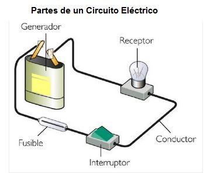

Electricidad
La electricidad es un conjunto de fenomenos producidos por movimientos e interaccion entre las cargas electricas positivas y negativas de los cuerpos fisicos. La energia por las cargas elctricas puede manifestarse dentro de cuatro ambitos: Fisicos, Luminoso, Mecanico, y Termico.
La electricidad se manifiesta mediante varios fenómenos y propiedades físicas:
Carga eléctrica: una propiedad de algunas partículas subatómicas, que determina su interacción electromagnética. La materia eléctricamente cargada produce y es influida por los campos electromagnéticos. Corriente eléctrica: el flujo de electrones que circula por un conductor en un determinado momento. Se mide en amperios. Campo eléctrico: un tipo de campo electromagnético producido por una carga eléctrica, incluso cuando no se está moviendo. El campo eléctrico produce una fuerza en toda otra carga, menor cuanto mayor sea la distancia que separa las dos cargas. Además, las cargas en movimiento producen campos magnéticos. Potencial eléctrico: es el trabajo que debe realizar una fuerza externa para atraer una carga positiva unitaria que desde el punto de referencia hasta el punto considerado, va en contra de la fuerza eléctrica y a velocidad constante. Magnetismo: la corriente eléctrica produce campos magnéticos, y los campos magnéticos variables en el tiempo generan corriente eléctrica.Corriente Continua
La corriente continua se refiere al flujo continuo de carga eléctrica a través de un conductor entre dos puntos de distinto potencial y carga eléctrica, que no cambia de sentido con el tiempo. A diferencia de la corriente alterna, en la corriente continua las cargas eléctricas circulan siempre en la misma dirección.
El flujo de cargas se produce a través de un conductor, como podría ser un hilo metálico. El flujo también se podría establecer a través de un semiconductor, un aislante o incluso al vacío como ocurre en un tubo de rayos catódicos. En este tipo de corriente eléctrica (corriente continua) las cargas eléctricas fluyen siempre en el mismo sentido, siendo un rasgo característico frente la corriente alterna.
Ejemplos:
Baterias, Acumuladores, Celdas Solares.
Corriente Alterna
Se denomina corriente alterna (AC, por sus siglas en inglés de Alternating current) a la corriente eléctrica en la que la magnitud y el sentido varían cíclicamente. La forma de oscilación de la corriente alterna más comúnmente utilizada es la oscilación senoidal con la que se consigue una transmisión más eficiente de la energía, a tal punto que al hablar de corriente alterna se sobrentiende que se refiere a la corriente alterna senoidal. Sin embargo, en ciertas aplicaciones se utilizan otras formas de oscilación periódicas, tales como la triangular o la rectangular. Utilizada genéricamente, la corriente alterna se refiere a la forma en la cual la electricidad llega a los hogares y a las industrias. Sin embargo, las señales de audio y de radio transmitidas por los cables eléctricos, son también ejemplos de corriente alterna. En estos usos, el fin más importante suele ser la transmisión y recuperación de la información codificada (o modulada) sobre la señal de la corriente alterna.
Ejemplos:
Tiendas, Viviendas, Acumuladores, Alumbrado publico, Bomba de Agua, Focos, Planchas, Estufas.
Circuito Electrico
Un circuito es una interconexión de componentes eléctricos (como baterías, resistores, inductores, condensadores, interruptores, transistores, entre otros) que transporta la corriente eléctrica a través de una trayectoria cerrada. Un circuito lineal, que consta de fuentes, componentes lineales (resistencias, condensadores, inductores) y elementos de distribución lineales (líneas de transmisión o cables), tiene la propiedad de la superposición lineal. Además, son más fáciles de analizar, usando métodos en el dominio de la frecuencia, para determinar su respuesta en corriente continua, en corriente alterna y transitoria. Un circuito resistivo es un circuito que contiene solo resistencias, fuentes de voltaje y corriente. El análisis de circuitos resistivos es menos complicado que el análisis de circuitos que contienen capacitores e inductores. Si las fuentes son de corriente continua, se denomina: «circuito de corriente continua». Un circuito que tiene componentes electrónicos se denomina circuito electrónico. Generalmente, estas redes son no lineales y requieren diseños y herramientas de análisis mucho más complejos.
Tarjeta Madre
La placa base, también conocida como tarjeta madre, placa madre o placa principal (motherboard o mainboard en inglés), es una tarjeta de circuito impreso a la que se conectan los componentes que constituyen la computadora. Es una parte fundamental para montar cualquier computadora personal de escritorio o portátil o algún dispositivo. Tiene instalados una serie de circuitos integrados, entre los que se encuentra el circuito integrado auxiliar (chipset), que sirve como centro de conexión entre el microprocesador (CPU), la memoria de acceso aleatorio (RAM), las ranuras de expansión y otros dispositivos. Está instalada dentro de una carcasa o gabinete que por lo general está hecha de chapa y tiene un panel para conectar dispositivos externos y muchos conectores internos y zócalos para instalar componentes internos. La placa base, además incluye un firmware llamado BIOS, que le permite realizar las funcionalidades básicas, como pruebas de los dispositivos, vídeo y manejo del teclado, reconocimiento de dispositivos y carga del sistema operativo.
Menu
Palabras Sabias
 Un hombre inteligente es aquel que sabe ser tan inteligente como para contratar gente más inteligente que él. .
Un hombre inteligente es aquel que sabe ser tan inteligente como para contratar gente más inteligente que él. .
John F.Kennedy